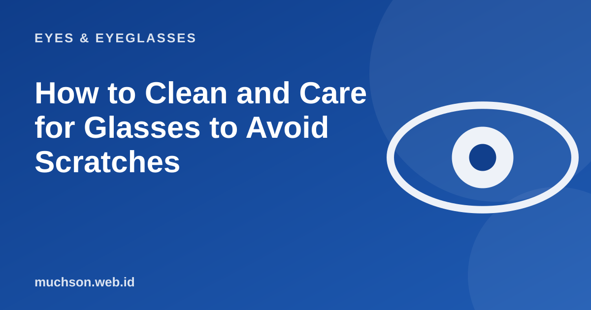

Home › Articles › Eyes & Eyeglasses
Eyes & EyeglassesHow to Clean and Care for Glasses to Avoid Scratches
The habit that damages lenses most is wiping them dry with the hem of a shirt or a tissue. Fine dust turns into sand that scratches the coating. Here is the right way, and a short list to put into practice.

The right way to clean
Text description of the diagram
- Wash your hands: so you do not add oil
- Rinse under running water: to remove fine dust
- Mild soap: rub gently on both sides
- Dry: with a clean microfibre cloth
What to avoid
A care routine
About the microfibre cloth
A dirty microfibre cloth scratches lenses instead. Wash it regularly with mild soap, rinse it well, and do not use fabric softener because it leaves an oily film. A fine-fibre microfibre cloth is the cheapest accessory and the one whose benefit you notice most.
Looking after the frame
- Use two hands to put glasses on and take them off, so the temples do not spread.
- Do not rest glasses on your hair or head because it stretches the temples.
- Titanium and acetate frames still need wiping free of sweat and oil.
- If they feel loose or crooked, visit the optical shop for an adjustment. Do not force them back into shape.
FAQ
Can I clean lenses with dish soap?
A small amount is fine, as long as it is gentle, without strong fragrance, and rinsed off well. Avoid anything containing bleach or ammonia.
How do I remove a scratch from a lens?
Scratches on a lens cannot be removed. Some products only disguise them for a while. If it bothers you, replace the lens.
How often should lenses be cleaned?
Every day or whenever they look dirty. Clean lenses make your eyes more comfortable and less tired.